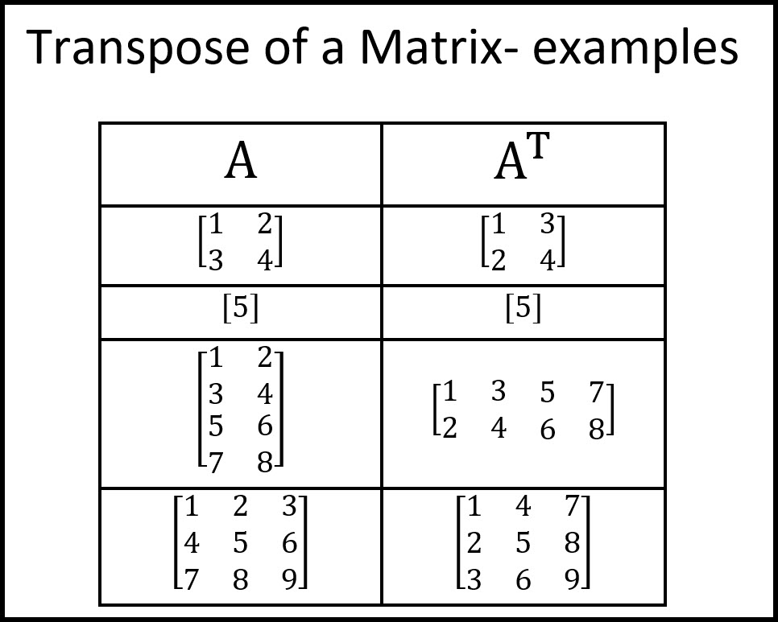
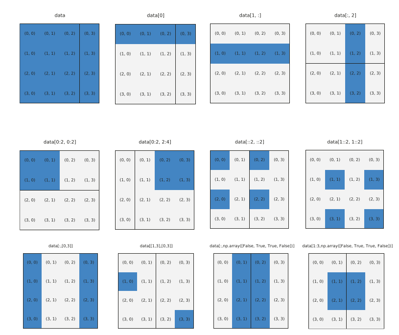

4. Arreglos y operaciones vectoriales con NumPy¶
NumPy es un paquete de computación científica con Python que provee:
Un objecto contenedor muy versatil: arreglo N-dimensional
ndarrayFunciones capaces de hacer broadcasting
Módulos para algebra lineal, Transformada de Fourier, generación de número aleatorios, entre otros
Herramientas para integrar código C/C++
Instalación
Con nuestro ambiente conda activado:
conda install numpy
Esto instalará numpy y las librerías de bajo nivel BLAS y MKL
Luego importamos usando
import numpy as np
print("Version: ", np.__version__)
Version: 1.19.2
4.1. Objeto ndarray (alias array)¶
Una lista lista de Python es un tipo de arreglo donde cada elemento puede ser de tipo diferente
En general es muy ineficiente hacer cálculos numéricos usando listas
Como reemplazo usaremos el objeto ndarray de NumPy, que corresponde a un arreglo n-dimensional de tipo fijo
A diferencia de una lista, las operaciones matemáticas y reducciones sobre ndarray son eficientes
Podemos crear un ndarray a partir de
una lista o tupla usando
np.arrayun fichero, por ejemplo usando
np.genfromtxtfunciones generadoras de NumPy, por ejemplo
np.linspace,np.zeros, etc
4.1.1. Ndarray a partir de listas y atributos básicos¶
# Supongamos que tenemos la siguiente lista de listas
L = [[0, 1, 2], [3, 4, 5]]
print("L es un", type(L))
# Podemos transformarla a ndarray con
A = np.array(L)
print("A es un", type(A))
display(A)
L es un <class 'list'>
A es un <class 'numpy.ndarray'>
array([[0, 1, 2],
[3, 4, 5]])
Los tipos de dato estándar de NumPy son:
Enteros: int8, int16, int32, int64
Enteros sin signo: uint8, uint16, uint32, uint64
Flotantes (reales): float16, float32, float64, float128
Números complejos: complex64, complex128, complex256
Booleanos: Bool
Podemos forzar el tipo usando el argumento dtype
display(np.array(L, dtype=np.int16))
display(np.array(L, dtype=np.float32))
array([[0, 1, 2],
[3, 4, 5]], dtype=int16)
array([[0., 1., 2.],
[3., 4., 5.]], dtype=float32)
Además el atributo dtype nos permite ver el tipo de un arreglo NumPy
x = np.array([1. + 2j])
print("x es de tipo", x.dtype)
x es de tipo complex128
El atributo
ndimes un entero que nos indica el número de dimensiones o ejes del arregloEl atributo
shapees una tupla de entero que nos indica el tamaño del arreglo en cada una de sus dimensiones
Por ejemplo:
display(A)
print("A tiene ", A.ndim, "dimensiones/ejes")
display(A.shape)
print("El eje 0 tiene largo", A.shape[0])
print("El eje 1 tiene largo", A.shape[1])
array([[0, 1, 2],
[3, 4, 5]])
A tiene 2 dimensiones/ejes
(2, 3)
El eje 0 tiene largo 2
El eje 1 tiene largo 3
Ordenamiento en memoria de ndarray
Por defecto un ndarray multidimensional se ordena en memoria siguiente un formato row-major similar a la convención usada en C. Alternativamente un arreglo se puede guardar en formato column-major similar a la convención usada en Fortran. La siguiente figura muestra la diferencia
{kind=link}
El atributo order nos permite seleccionar el ordenamiento al momento de crear el arreglo
También se puede verificar el ordenamiento de un ndarray leyendo su atributo flags
Si tiene el flag
C_CONTIGUOUSverdadero entonces esrow majorSi tiene el flag
F_CONTIGUOUSverdadero entonces escolumn major
A = np.array(L)
display(A)
display(A.flags['C_CONTIGUOUS']) # Por defecto es True
A = np.array(L, order='F')
display(A)
display(A.flags['C_CONTIGUOUS'])
array([[0, 1, 2],
[3, 4, 5]])
True
array([[0, 1, 2],
[3, 4, 5]])
False
El diccionario flags contiene los siguientes valores:
A.flags
C_CONTIGUOUS : False
F_CONTIGUOUS : True
OWNDATA : True
WRITEABLE : True
ALIGNED : True
WRITEBACKIFCOPY : False
UPDATEIFCOPY : False
4.1.2. Crear un ndarray a partir de ficheros¶
Cuando se trabajo con tablas de datos es muy común que estas se distribuyan como fichero en formato csv
Un fichero csv es tipicamente un texto plano con valores separados por comas como el que se muestra a continuación
# Por ejemplo:
!cat example.csv
1,2,3
4,5,6
7,8,9
El proceso de transformar este archivo en texto plano a una estructura de datos numérica se llama parseo
NumPy tiene algunas operaciones de IO para conectar con ficheros e importar datos. Por ejemplo para leer un archivo en formato CSV podemos usar genfromtxt especificando adecuadamente el caracter deliminator y opcionalmente el tipo
data = np.genfromtxt('example.csv', delimiter=',')
data
array([[1., 2., 3.],
[4., 5., 6.],
[7., 8., 9.]])
Por defecto se importo como un arreglo de números flotantes. Podemos evitar lo anterior y forzar el tipo entero con
data = np.genfromtxt('example.csv',
delimiter=',', # Separador entre caracteres
dtype=int
)
data
array([[1, 2, 3],
[4, 5, 6],
[7, 8, 9]])
Nota
No se darán más detalles pues más adelante veremos la librería pandas que provee funciones mucho más poderosas y flexibles para hacer parsing de datos
4.1.3. Funciones generadoras de arreglos¶
Se pueden crear arreglos directamente desde Numpy
Algunos ejemplos útiles
display(np.zeros(shape=(3, 3), dtype=np.int)) # Lleno de ceros
display(np.ones(shape=(3, 3), dtype=np.float32)) # Lleno de unos
display(np.full(shape=(3, 3), fill_value=np.pi)) # Lleno de PI
display(np.eye(3)) # Matriz identidad
display(np.random.randn(3, 3)) # Matriz aleatoria con distribución N(0, 1)
array([[0, 0, 0],
[0, 0, 0],
[0, 0, 0]])
array([[1., 1., 1.],
[1., 1., 1.],
[1., 1., 1.]], dtype=float32)
array([[3.14159265, 3.14159265, 3.14159265],
[3.14159265, 3.14159265, 3.14159265],
[3.14159265, 3.14159265, 3.14159265]])
array([[1., 0., 0.],
[0., 1., 0.],
[0., 0., 1.]])
array([[-0.04709358, 0.18848738, -0.28693954],
[ 0.5208741 , 0.6379971 , -0.14631963],
[-0.9935094 , -0.79145236, 0.1196197 ]])
También existen versiones de estas funciones que copian el tamaño de otro ndarray
display(np.zeros_like(A))
array([[0, 0, 0],
[0, 0, 0]])
Las siguientes funciones son muy útiles cuando necesitamos crear un rango lineal o logarítmico usando
Especificamos el inicio, el fin y el paso o cantidad de elementos
display(np.arange(start=0, stop=5, step=0.5)) # paso
display(np.linspace(start=0, stop=10, num=11)) # cantidad de elementos
display(np.logspace(start=-1, stop=1, num=11))
array([0. , 0.5, 1. , 1.5, 2. , 2.5, 3. , 3.5, 4. , 4.5])
array([ 0., 1., 2., 3., 4., 5., 6., 7., 8., 9., 10.])
array([ 0.1 , 0.15848932, 0.25118864, 0.39810717, 0.63095734,
1. , 1.58489319, 2.51188643, 3.98107171, 6.30957344,
10. ])
4.2. Manipulación de matrices y vectores¶
Es usual que antes de operar un ndarray necesitemos cambiar su tamaño o número de dimensiones
Algunas operaciones típicas para modificar la forma de un arreglo son: reshape, tile, repeat, ravel y transpose
reshape reorganice las dimensiones de un arreglo pero debe preservar el tamaño
A = np.arange(6)
display(A)
# Convierte 6 a 3x2
display(np.reshape(A, (3, 2)))
# Convierte 6 a 2x3
display(np.reshape(A, (2, 3)))
array([0, 1, 2, 3, 4, 5])
array([[0, 1],
[2, 3],
[4, 5]])
array([[0, 1, 2],
[3, 4, 5]])
tile repite el arreglo en una dirección dada
# Repite 4 veces en la dirección de las filas
display(np.tile(A, (4, 1)))
# Repite 2 veces en la dirección de las columnas
display(np.tile(A, (1, 2)))
array([[0, 1, 2, 3, 4, 5],
[0, 1, 2, 3, 4, 5],
[0, 1, 2, 3, 4, 5],
[0, 1, 2, 3, 4, 5]])
array([[0, 1, 2, 3, 4, 5, 0, 1, 2, 3, 4, 5]])
repeat repite cada elemento en una dirección o eje dado
# Cada elemento aparece dos veces (duplicación)
display(np.repeat(A, 2))
# Cada elemento/fila aparece dos veces en la dirección de las filas
display(np.repeat(A.reshape(3, 2), 2, axis=0))
# Cada elemento aparece dos veces en la dirección de las columnas
display(np.repeat(A.reshape(3, 2), 2, axis=1))
array([0, 0, 1, 1, 2, 2, 3, 3, 4, 4, 5, 5])
array([[0, 1],
[0, 1],
[2, 3],
[2, 3],
[4, 5],
[4, 5]])
array([[0, 0, 1, 1],
[2, 2, 3, 3],
[4, 4, 5, 5]])
ravel es una función que aplana el ndarray y retorna un arreglo de una dimensión
# Convierte una matriz de 5x5 en un arreglo de 25
display(np.ravel(np.zeros(shape=(5, 5))))
array([0., 0., 0., 0., 0., 0., 0., 0., 0., 0., 0., 0., 0., 0., 0., 0., 0.,
0., 0., 0., 0., 0., 0., 0., 0.])
transpose puede utilizarse para intercambiar la posición de los ejes/dimensiones de un ndarray
Tiene el mismo significado de la trasposición matricial
{kind=link}
Por ejemplo:
A = np.arange(9).reshape(3, 3)
display(A)
display(np.transpose(A)) # Equivalente a A.transpose() o A.T
array([[0, 1, 2],
[3, 4, 5],
[6, 7, 8]])
array([[0, 3, 6],
[1, 4, 7],
[2, 5, 8]])
transpose puede usarse en ndarrays de cualquier dimensionalidad
Podemos usar el argumento axes para especificar cuales dimensiones se van a intercambiar
(Opcionalmente podemos usar la función np.swapaxes() para obtener le mismo efecto)
A = np.arange(8).reshape(2, 2, 2)
display(A)
display(np.transpose(A, axes=(0, 2, 1)))
array([[[0, 1],
[2, 3]],
[[4, 5],
[6, 7]]])
array([[[0, 2],
[1, 3]],
[[4, 6],
[5, 7]]])
Agregar dimensiones a un arreglo
En algunas ocasiones nos interesará extender un arreglo, agregándole dimensiones
Consideremos el siguiente arreglo unidimensional
A = np.array([0, 1, 2, 3, 4])
print("Dimensión:", A.ndim, ", Tamaño: ", A.shape)
Dimensión: 1 , Tamaño: (5,)
Como vimos antes podemos agregar una dimensión usando reshape, pero otra forma más simple es usando np.newaxis (un alias de None)
Si queremos agregarle una dimensión al arreglo anterior podemos hacerlo a la derecha o a la izquierda
Por ejemplo agregarle una dimensión a la derecha creará una matriz de \(N\times1\) o vector columna
Amod = A[:, np.newaxis]
display(Amod)
print("Dimensión:", Amod.ndim, ", Tamaño: ", Amod.shape)
array([[0],
[1],
[2],
[3],
[4]])
Dimensión: 2 , Tamaño: (5, 1)
Mientras que agregarle una dimensión a la izquierda creará una matriz de \(1\times N\) o vector fila
Amod = A[np.newaxis, :]
display(Amod)
print("Dimensión:", Amod.ndim, ", Tamaño: ", Amod.shape)
array([[0, 1, 2, 3, 4]])
Dimensión: 2 , Tamaño: (1, 5)
Algunas operaciones útiles para combinar arreglos son: concatenate, vstack, hstack
concatenate es más general que las dos últimas
A = np.arange(6).reshape(1, 6) # 1,2,3,4,5,6
B = np.ones(shape=(1,6)) #1,1,1,1,1,1
# Combinar en eje filas
display(np.concatenate((A, B), axis=0))
# Combinar en eje columnas
display(np.concatenate((A, B), axis=1))
# Combina siempre en fila
display(np.vstack((A, B)))
# Combina siempre en columna
display(np.hstack((A, B)))
array([[0., 1., 2., 3., 4., 5.],
[1., 1., 1., 1., 1., 1.]])
array([[0., 1., 2., 3., 4., 5., 1., 1., 1., 1., 1., 1.]])
array([[0., 1., 2., 3., 4., 5.],
[1., 1., 1., 1., 1., 1.]])
array([[0., 1., 2., 3., 4., 5., 1., 1., 1., 1., 1., 1.]])
Finalmente resaltar que existen funciones para agregar o quitar elementos: append, insert, delete
A = np.array([1., 2., 3.])
display(A)
# Agrega un elemento al final
display(np.append(A, 4))
# Agrega un elemento en la posición indicada
display(np.insert(A, 2, values=0.))
# Elimina el elemento en la posición indicada (retorna un nuevo arreglo)
display(np.delete(A, 2))
array([1., 2., 3.])
array([1., 2., 3., 4.])
array([1., 2., 0., 3.])
array([1., 2.])
4.3. Indexación y slicing¶
Al igual que otros contenedores de Python los ndarray soportan slicing
Slicing es crear una arreglo a partir de una indexación sobre otro arreglo
Sea por por ejemplo:
L = [[0, 1, 2], [3, 4, 5]]
A = np.array(L)
display(A)
array([[0, 1, 2],
[3, 4, 5]])
Para acceder al elemento en la segunda fila y primera columna usaríamos
display(L[1][0], # Con la lista
A[1, 0]) # Con el ndarray
3
3
El ndarray nos da mucha flexibilidad para hacer slicing
display(A[:, 1]) # Retorna la segunda columna
display(A[0, :]) # Retorna la primera fila
display(A[1, ::2]) # Retorna los elementos de la primera fila y columnas pares
display(A[-1, -2]) # Retorna los elementos de la ultima fila y penultima columna
array([1, 4])
array([0, 1, 2])
array([3, 5])
4
También podemos usar un arreglo de enteros para indexar otro arreglo
Esto se llama fancy indexing
ix = np.array([0, 0, 1])
iy = np.array([0, 1, 1])
display(A[ix, iy]) # Elementos [0,0], [0,1] y [1,1]
array([0, 1, 4])
Con un slice podemos escribir directamente en esos valores y modificarlos:
A[ix, iy] = 10
display(A)
array([[10, 10, 2],
[ 3, 10, 5]])
También podemos indexar usando un arreglo de booleanos
A = np.array([0, 2, 1, 3, 4])
B = np.array([True, False, False, True, True])
display(A[B])
array([0, 3, 4])
La siguiente figura muestra de forma esquemática varios ejemplos de slices
{kind=link}
Nota
Algunas operaciones sobre arreglos no hacen copias (usan referencias)
En particular cuando hacemos un slice, estamos modificando el arreglo original
A = np.arange(100).reshape(10, 10)
B = A
B is A
True
Si modifico A se ve reflejado en B
A[:5, :5] = 100
display(B)
array([[100, 100, 100, 100, 100, 5, 6, 7, 8, 9],
[100, 100, 100, 100, 100, 15, 16, 17, 18, 19],
[100, 100, 100, 100, 100, 25, 26, 27, 28, 29],
[100, 100, 100, 100, 100, 35, 36, 37, 38, 39],
[100, 100, 100, 100, 100, 45, 46, 47, 48, 49],
[ 50, 51, 52, 53, 54, 55, 56, 57, 58, 59],
[ 60, 61, 62, 63, 64, 65, 66, 67, 68, 69],
[ 70, 71, 72, 73, 74, 75, 76, 77, 78, 79],
[ 80, 81, 82, 83, 84, 85, 86, 87, 88, 89],
[ 90, 91, 92, 93, 94, 95, 96, 97, 98, 99]])
Modificaciones en subarreglos (vistas) también son referenciadas
A = np.arange(100).reshape(10, 10)
B = A[:5, :5]
display(B is A)
B[:, :] = 100
display(A)
False
array([[100, 100, 100, 100, 100, 5, 6, 7, 8, 9],
[100, 100, 100, 100, 100, 15, 16, 17, 18, 19],
[100, 100, 100, 100, 100, 25, 26, 27, 28, 29],
[100, 100, 100, 100, 100, 35, 36, 37, 38, 39],
[100, 100, 100, 100, 100, 45, 46, 47, 48, 49],
[ 50, 51, 52, 53, 54, 55, 56, 57, 58, 59],
[ 60, 61, 62, 63, 64, 65, 66, 67, 68, 69],
[ 70, 71, 72, 73, 74, 75, 76, 77, 78, 79],
[ 80, 81, 82, 83, 84, 85, 86, 87, 88, 89],
[ 90, 91, 92, 93, 94, 95, 96, 97, 98, 99]])
Si queremos evitar este comportamiento se puede forzar la creación de una copia con el método copy()
B = A.copy()
A[0, 0] = 0
display(B[0])
array([100, 100, 100, 100, 100, 5, 6, 7, 8, 9])
4.4. Operaciones sobre ndarray¶
4.4.1. Operaciones aritméticas y Broadcasting¶
Los ndarray soportan las operaciones aritméticas básicas
Suma: +, +=
Resta: -, -=
Multiplicación: ,=
División: /, /=
División entera: //, //=
Exponenciación: ** , **=
Estas operaciones tienen un comportamiento element-wise (elemento a elemento), es decir
Note que no corresponde a la multiplicación usual de matrices
Veamos algunos ejemplos:
N = 3
A = np.eye(N)
B = np.ones(shape=(N, N))
display(A)
display(B)
display(A + B)
display(A*B)
array([[1., 0., 0.],
[0., 1., 0.],
[0., 0., 1.]])
array([[1., 1., 1.],
[1., 1., 1.],
[1., 1., 1.]])
array([[2., 1., 1.],
[1., 2., 1.],
[1., 1., 2.]])
array([[1., 0., 0.],
[0., 1., 0.],
[0., 0., 1.]])
Cuando los términos no son del mismo tamaño se hace un broadcast
Por ejemplo si operamos una constante con un arreglo, la constante se opera con cada elemento del arreglo
A - 1
array([[ 0., -1., -1.],
[-1., 0., -1.],
[-1., -1., 0.]])
Reglas de broadcasting en Numpy
Si dos arreglos son de dimensiones distintas la dimensión del más pequeño se agranda con «1»s por la izquierda
Si dos arreglos tienen tamaños ditintos, el que tiene tamaño “1” se estira en dicha dimensión
Si en cualquier dimensión los tamaños son distintos y ninguno es igual a “1” ocurre un error
{kind=link}
Imagen tomada del Python Data Science Handbook
Observe los siguientes ejemplos y reflexione sobre las reglas de broadcast que se está aplicando en cada caso
C = np.arange(N)
B = np.ones(shape=(N, N))
display(C)
display(B)
display(B + C)
display(B + C.reshape(-1, 1))
array([0, 1, 2])
array([[1., 1., 1.],
[1., 1., 1.],
[1., 1., 1.]])
array([[1., 2., 3.],
[1., 2., 3.],
[1., 2., 3.]])
array([[1., 1., 1.],
[2., 2., 2.],
[3., 3., 3.]])
display(C.reshape(1, N))
display(C.reshape(N, 1))
display(C.reshape(1, N) + C.reshape(N, 1))
array([[0, 1, 2]])
array([[0],
[1],
[2]])
array([[0, 1, 2],
[1, 2, 3],
[2, 3, 4]])
4.4.2. Operaciones matriciales¶
Antes dijimos que la multiplicación con * se realiza elemento a elemento
Para realizar una multiplicación matricial propiamente tal podemos usar dot o el operador @
A = np.arange(4).reshape(2, 2)
B = np.arange(4)[::-1].reshape(2, 2)
display(A, B)
array([[0, 1],
[2, 3]])
array([[3, 2],
[1, 0]])
Note la diferencia:
display(A*B)
display(np.dot(A, B))
array([[0, 2],
[2, 0]])
array([[1, 0],
[9, 4]])
Otras operaciones matricionales útiles son:
np.innerque calcula el producto escalar o producto internonp.outerque calcula el producto externonp.crossque calcula cruz
display(np.inner(A, B))
display(np.outer(A, B))
array([[ 2, 0],
[12, 2]])
array([[0, 0, 0, 0],
[3, 2, 1, 0],
[6, 4, 2, 0],
[9, 6, 3, 0]])
El módulo linalg de NumPy contiene muchas más funciones de álgebra lineal que nos permiten
Calcular matriz inversa, determinantes y trazas
Resolver sistemas lineales
Factorizar matrices
Calcular valores y vectores propios
entre otros. Este módulo será estudiando en detalle en lecciones más avanzadas
4.4.3. Operaciones de reducción¶
Llamamos reducción a una operación que agrega los valores de un arreglo entregando un único valor como respuesta
La reducción más básica es la suma agregada
Las operaciones de reducción se usan ampliamente para resumir datos y hacer estadística
Algunas de las reducciones disponibles en NumPy son:
sum,prodamax,amin,argmax,argminmean,std,var,percentile,mediancumsum,cumprod
Diferencia entre sumar en el eje de filas, columnas y suma total:
A = np.tile(np.arange(3), (3, 1))
display(A)
display(np.sum(A, axis=0))
display(np.sum(A, axis=1))
display(np.sum(A))
array([[0, 1, 2],
[0, 1, 2],
[0, 1, 2]])
array([0, 3, 6])
array([3, 3, 3])
9
Encontrar el valor y posición del máximo en un arreglo es también un tipo de reducción
A = np.random.randn(3, 3)
display(A)
display(np.amax(A, axis=0))
display(np.argmax(A, axis=0))
array([[ 0.82397692, -0.67656392, -0.96837046],
[ 1.73200494, 1.88175063, -0.77769131],
[ 1.05301167, -0.45764428, 0.6027381 ]])
array([1.73200494, 1.88175063, 0.6027381 ])
array([1, 1, 2])
Las operaciones de reducción de NumPy son altamente eficientes
Hagamos una pequeña prueba de desempeño sumando un vector
Usaremos la magia de IPython @timeit que nos permite medir tiempo de cómputo
A = np.arange(100000)
def suma_loop(arreglo):
suma = 0.
for elemento in arreglo:
suma += elemento
return suma
L = list(A)
%timeit -n10 suma_loop(A)
%timeit -n10 suma_loop(L)
%timeit -n10 sum(A)
%timeit -n10 sum(L)
%timeit -n10 np.sum(L)
%timeit -n10 np.sum(A)
display(np.sum(A))
display(sum(L))
34.1 ms ± 578 µs per loop (mean ± std. dev. of 7 runs, 10 loops each)
22.9 ms ± 244 µs per loop (mean ± std. dev. of 7 runs, 10 loops each)
22.8 ms ± 696 µs per loop (mean ± std. dev. of 7 runs, 10 loops each)
12.5 ms ± 579 µs per loop (mean ± std. dev. of 7 runs, 10 loops each)
10.4 ms ± 176 µs per loop (mean ± std. dev. of 7 runs, 10 loops each)
96.1 µs ± 12.8 µs per loop (mean ± std. dev. of 7 runs, 10 loops each)
4999950000
4999950000
Muchas de estas funciones están implementadas como métodos de la clase arreglo, por ejemplo
display(A.sum())
display(A.max(axis=0))
display(A.min())
4999950000
99999
0
También cuentan con versiones seguras contra NaNs
A = np.array([1., 10., 2., np.nan])
display(np.sum(A))
display(np.nansum(A))
nan
13.0
Nota: Si queremos encontrar los NaN en un arreglo podemos usar isnan
np.isnan(A)
array([False, False, False, True])
4.4.4. Operaciones vectorizadas¶
Son funciones que operan de forma element-wise o elemento a elemento
Ya vimos las operaciones aritméticas elemento a elemento pero existen muchas más
Por ejemplo para calcular el valor absoluto de los elementos de un arreglo
A = np.random.randn(3, 3)
display(A)
np.absolute(A) # Equivalente a np.abs(A)
array([[ 0.17685181, 0.63780012, 0.00796417],
[-0.21382777, 2.27976061, -0.95547155],
[-0.13837438, 0.20290642, 0.49751758]])
array([[0.17685181, 0.63780012, 0.00796417],
[0.21382777, 2.27976061, 0.95547155],
[0.13837438, 0.20290642, 0.49751758]])
Exponenciar un arreglo
x = np.arange(10)
display(np.power(x, 2)) # Equivalente a x**2
display(np.sqrt(x))
array([ 0, 1, 4, 9, 16, 25, 36, 49, 64, 81])
array([0. , 1. , 1.41421356, 1.73205081, 2. ,
2.23606798, 2.44948974, 2.64575131, 2.82842712, 3. ])
Calcular funciones exponencial, logaritmo y trigonométricas a partir de una arreglo
x = np.array([0.1, 1., 10.0])
display(np.log(x)) # También está log2, log10
display(np.exp(x))
display(np.sin(x)) # También está arcsin, sinh
display(np.cos(x)) # También está arccos, cosh
display(np.tan(x)) #También está arctan, tanh
array([-2.30258509, 0. , 2.30258509])
array([1.10517092e+00, 2.71828183e+00, 2.20264658e+04])
array([ 0.09983342, 0.84147098, -0.54402111])
array([ 0.99500417, 0.54030231, -0.83907153])
array([0.10033467, 1.55740772, 0.64836083])
Otras funciones útiles:
Para obtener el signo de cada elemento de un arreglo:
signPara obtener un arreglo de 1 dividido los elementos del mismo:
reciprocalPara redondear hacia abajo o hacia arriba:
round,floorycielPara obtener la parte real o imaginaria de un número complejo:
real,imagO el conjugado de un número complejo:
conj,
4.4.5. Operaciones booleanas¶
NumPy soporta operaciones booleanas sobre ndarray
A = np.arange(6).reshape(2, 3)
display(A)
display(A == 4)
display(np.equal(A, 4))
array([[0, 1, 2],
[3, 4, 5]])
array([[False, False, False],
[False, True, False]])
array([[False, False, False],
[False, True, False]])
Como vimos antes podemos crear una máscara booleana para indexar un arreglo
mask = ~(A % 2 == 0) & (A > 2)
display(mask)
display(A[mask])
array([[False, False, False],
[ True, False, True]])
array([3, 5])
La función where sirve para recuperar el índice de los elementos que cumplen una cierta condición
(ixs, iys) = np.where(~(A % 2 == 0) & (A > 2))
for i, j in zip(ixs, iys):
display("Fila {0} Columna {1} Valor {2}".format(i, j, A[i, j]))
'Fila 1 Columna 0 Valor 3'
'Fila 1 Columna 2 Valor 5'
Funciones any y all
x = np.random.randn(3, 3)
display(x)
b = (x > 0) & (x**2 > 0.5)
display(b)
display(np.any(b))
display(np.all(b))
array([[-0.73534464, 1.02261999, 0.95352475],
[ 1.6173738 , -0.93409554, 0.99586989],
[-0.15991381, -1.09561692, -0.1734633 ]])
array([[False, True, True],
[ True, False, True],
[False, False, False]])
True
False
4.4.6. Operaciónes de conjutos¶
Operaciones de tipo union, intersección y diferencia entre arreglos 1D
Si se les entrega un arreglo de mayor dimensión este se aplanará automaticamente
A = np.arange(6)
B = np.array([0, 1, 10, 100])
display(A,
B)
array([0, 1, 2, 3, 4, 5])
array([ 0, 1, 10, 100])
La unión e intersección, respectivamente:
display(np.union1d(A, B),
np.intersect1d(A, B))
array([ 0, 1, 2, 3, 4, 5, 10, 100])
array([0, 1])
O los elementos que existen a A y no en B (y viceversa)
display(np.setdiff1d(A, B),
np.setdiff1d(B, A))
array([2, 3, 4, 5])
array([ 10, 100])
4.4.7. Ordenando arreglos¶
NumPy provee la función np.sort para ordernar un ndarray
Se puede usar el argumento kind para escoger distintos algoritmos de ordenamiento (por defecto quicksort)
El argumento axis especifica que eje se va a ordenar
A = np.random.randn(2, 2)
display(A)
display(np.sort(A, axis=1))
display(np.sort(A, axis=0))
display(np.sort(A, axis=None))
array([[ 1.303202 , -1.68357851],
[-0.36420283, 1.07719241]])
array([[-1.68357851, 1.303202 ],
[-0.36420283, 1.07719241]])
array([[-0.36420283, -1.68357851],
[ 1.303202 , 1.07719241]])
array([-1.68357851, -0.36420283, 1.07719241, 1.303202 ])
La función np.argsort entrega un arreglo de índices que ordena el arreglo de menor a mayor
A = np.array(["A", "B", "C"])
B = np.array([2, 4, 1])
idx = np.argsort(B)
display(idx)
display(A[idx])
array([2, 0, 1])
array(['C', 'A', 'B'], dtype='<U1')
4.5. Tópicos extra:¶
NumPy para usuarios de Matlab
En la documentación de NumPy, en la sección NumPy para usuarios de Matlab se describen las diferencias clave entre NumPy y Matlab y se presenta una tabla de equivalencias entre las funciones de ambos
Extender NumPy
NumPy provee una API en lenguaje C para manipular ndarray a bajo nivel
La API se puede usar para crear nuevas funcioens y módulos que utilicen ndarray
Computación simbólica
La computación simbólica es un paradigma donde los cálculos se hacen de forma análitica en lugar de númerica
Se definen variables o simbolos que son operados algebraicamente
Este paradigma se usa tipicamente para obtener expresiones simplificadas de derivadas o integrales, series, límites, factorizaciones, expansiones, etc
Paradigma númerico: Nos da el resultado de una expresión
Paradigma simbólico: Nos da la expresión
En Python se puede hacer computación simbólica con SimPy